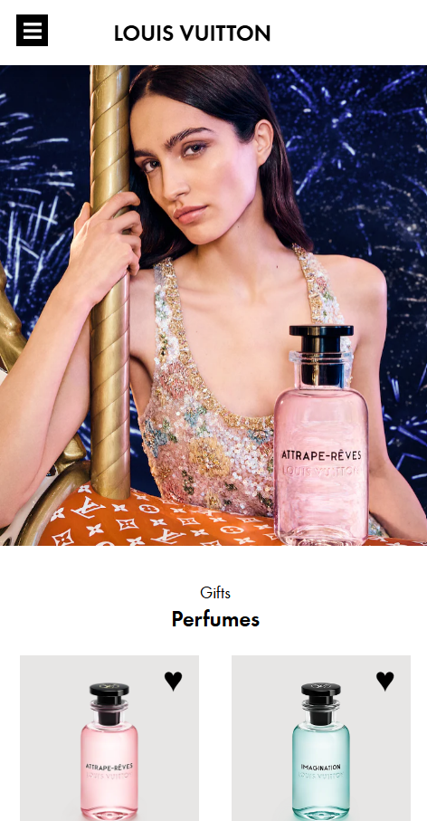
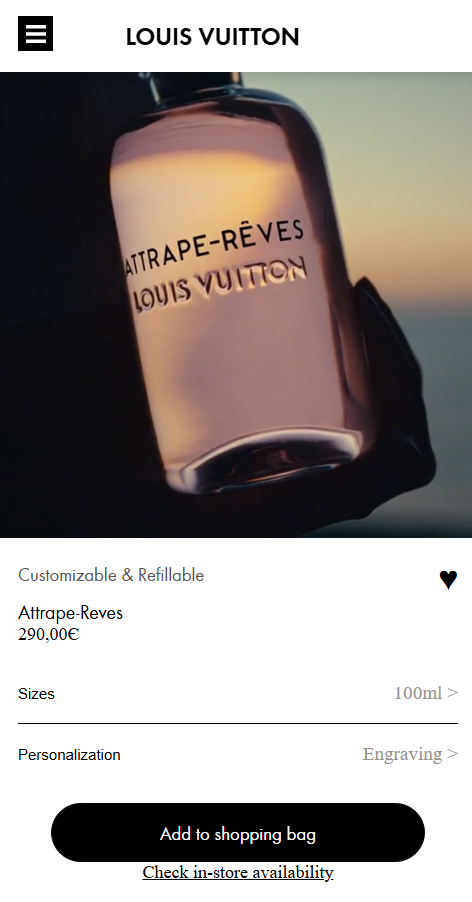

Louis VuittonAccessible front-end.



This project focused on recreating two pages from the official Louis Vuitton website while placing a strong emphasis on web accessibility, semantic HTML, and modern front-end development. The primary objective was not only to replicate the visual appearance of the original website but also to improve its accessibility by following the Web Content Accessibility Guidelines (WCAG). Throughout the project, I learned how thoughtful front-end development can create a better experience for all users, including those who rely on assistive technologies.
One of the main requirements was to build the pages using clean, well-structured HTML and CSS while writing maintainable and reusable code. Special attention was given to semantic HTML elements and the correct implementation of ARIA labels to improve navigation for users with disabilities. During the development process, I also learned how to use screen readers to test my website from the perspective of visually impaired users. This allowed me to identify accessibility issues and make meaningful improvements to the overall user experience.
The project required me to recreate several interactive features that are commonly found on modern websites. Using JavaScript, I implemented components such as a responsive hamburger navigation menu, an interactive image carousel, micro-interactions, dark mode functionality, and a reduced motion option for users who are sensitive to animations. These features not only improved the overall user experience but also helped me gain a deeper understanding of how JavaScript can be used to create dynamic and engaging web interfaces.
Besides functionality, I also spent considerable time refining the visual presentation of the website. I carefully recreated the layout, typography, spacing, and overall design while ensuring that the interface remained responsive across different screen sizes. To enhance the browsing experience, I implemented smooth scrolling effects, hover animations, and subtle transitions that complemented the luxury aesthetic of the original Louis Vuitton website without compromising performance or accessibility.
Throughout this project, I further developed my skills in HTML, CSS, and JavaScript while gaining valuable experience in writing semantic code and building accessible websites. I learned how accessibility should be considered from the very beginning of the development process rather than being added as an afterthought. Testing with screen readers and implementing WCAG principles gave me a much better understanding of inclusive design and reinforced the importance of creating websites that are usable by as many people as possible.
Overall, this project strengthened both my technical and problem-solving skills. It taught me how to balance visual accuracy, interactivity, performance, and accessibility while working on a realistic front-end development assignment. The experience has made me more confident in developing responsive, user-friendly, and inclusive web applications that follow modern web development standards.